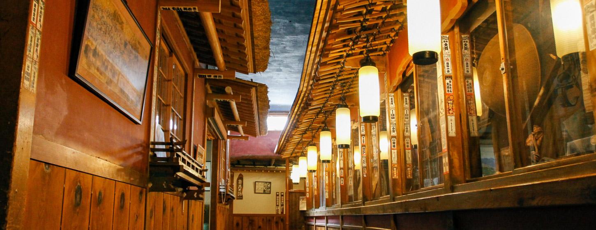
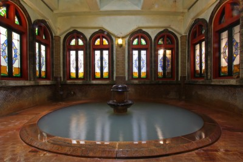
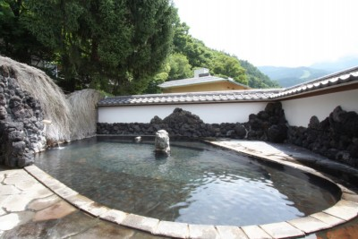
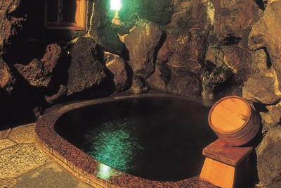
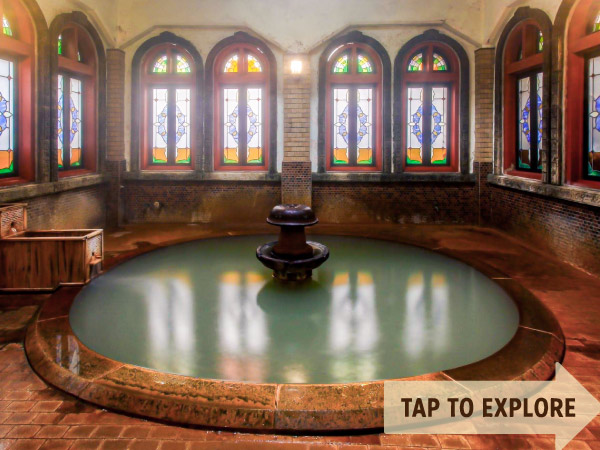
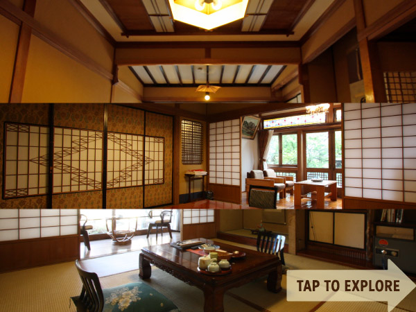
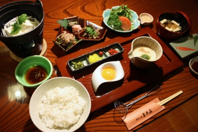

Kanaguya歴史の宿 金具屋 · fundado en 1758
¥12.150 – 24.880 / persona








Patrimonio Cultural Nacional desde 2003. El Saigetsurō es una torre de madera de cuatro plantas de 1936 levantada sin una sola pieza de acero. Nueve baños propios de cuatro manantiales, cinco privados, más otros cinco de alquiler. Es el edificio que todo el mundo compara con la casa de baños de El viaje de Chihiro — Ghibli nunca lo ha confirmado.
5 baños privados1758 · Patrimonio